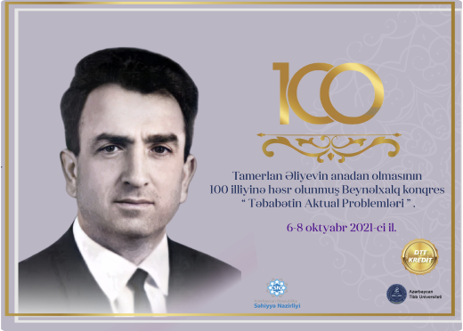

Azərbaycanda tibb təhsilinin və tibb elminin bünövrəsi Azərbaycan Xalq Cümhuriyyətinin parlamenti tərəfindən 1919-cu ildə Bakı Dövlət Universitetinin nəzdində yaradılan Tibb fakultəsində qoyulmuşdur. 1930-cu ildə bütün SSRİ miqyasında Universitetlərin Tibb fakultələrinin Tibb İnstitutuna çevrilməsi haqqında qərar verilmiş və həmin ilin may ayının 9-da BDU-nun Tibb fakultəsinin bazası və onun elmi-pedoqoji potensialı əsasında 2 fakultədən (mülicə-profilaktika və sanitariya-gigiyena) ibarət Azərbaycan Dövlət Tibb İnstitutu təşkil edilmişdir. 1991-ci ildə ATİ Universitet statusu almışdır. Fəaliyyət göstərdiyi 90 il ərzində ATU-da 80 mindən çox həkim və əczaçı (provizor) hazırlanıb.